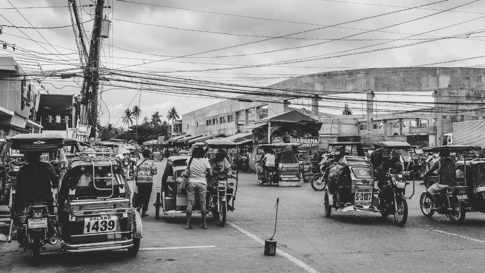

Background
Long before Spanish colonization, the lands of Nueva Vizcaya were inhabited by indigenous peoples — the Bugkalot (Ilongot), Gaddang, Isinai, Kalanguya, and Ifugao — who had their own rich cultures, languages, and governance systems.
The Spanish missionaries arrived in the 17th century and established missions that would eventually develop into the towns we know today. The province was formally established as a political unit during Spanish rule and named after the Spanish province of Vizcaya.
Indigenous groups such as the Bugkalot, Gaddang, Isinai, and Kalanguya lived in the highlands, practicing agriculture, hunting, and rich cultural traditions guided by tribal customs.
Missionaries from Spain arrived and established settlements and missions. Early towns such as Dupax were formed during this period.
Nueva Vizcaya was officially created as a province under Spanish rule, with Bayombong as its capital, named after a region in Spain.
Under American rule, governance was reorganized, public schools were built, and roads connecting provinces were developed.
The province played a role in resistance movements against Japanese occupation, with many locals joining guerrilla forces.
Agriculture expanded, especially citrus farming, and infrastructure improved, strengthening trade and transportation routes.
Now known as the Citrus Capital of the Philippines, the province is a growing tourism destination with rich culture, nature, and hospitality.